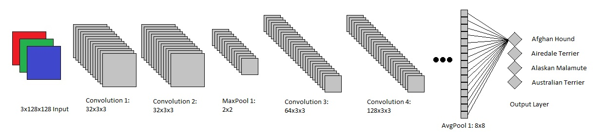
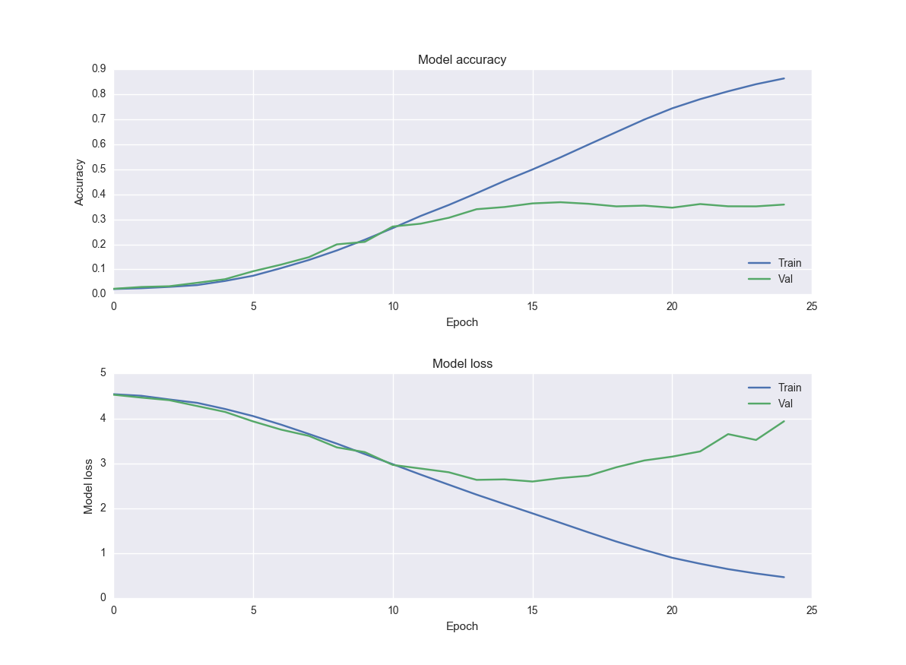
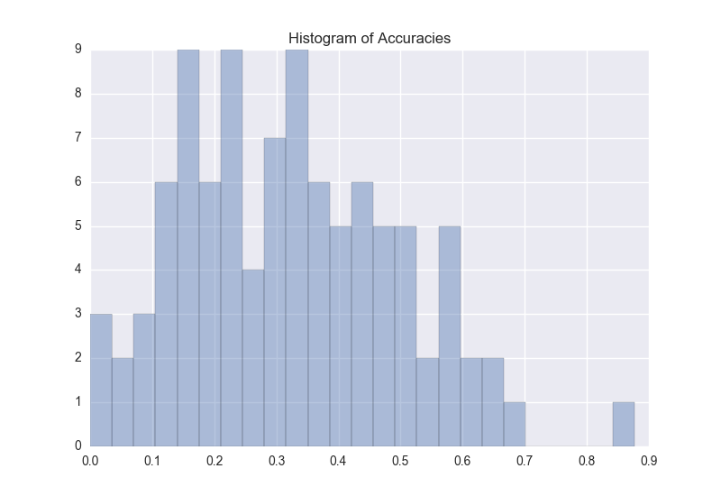
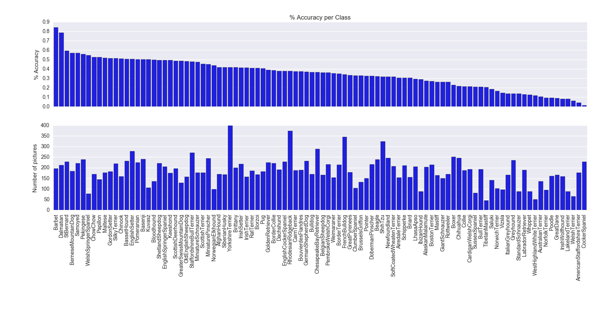
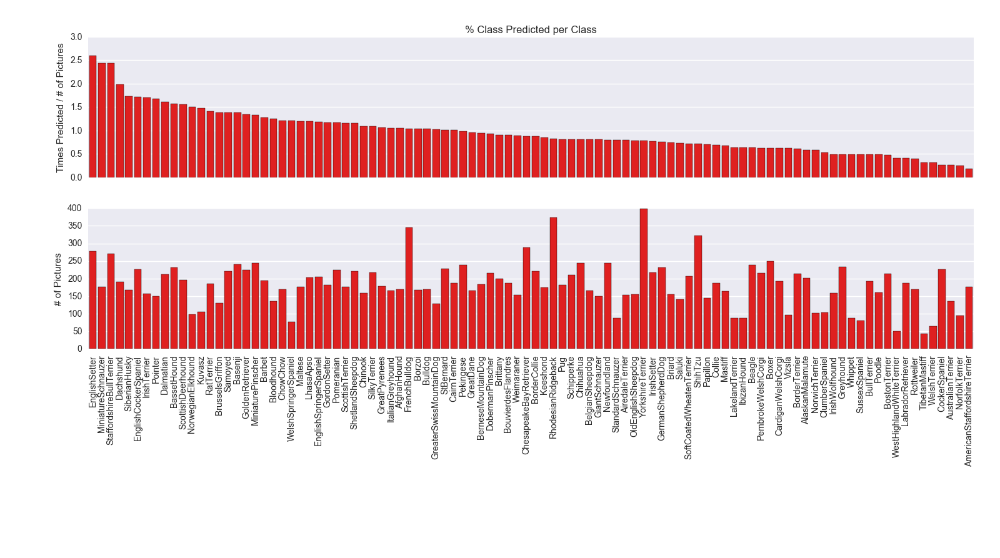

About the Project
Quick project summary
IdentiFido is a dog breed classification project based on convolutional neural networks (CNN). Convolutional neural networks are a flavor of deep learning that have been developed specifically for visual learning.
The original idea sprouted from my families history of owning several mixed breed dogs. We've always just guessed at what they were based on general appearance/personality. However, after delving into neural networks, I thought it would be interesting to try a computational approach.
The goal of the project was to train on a large set of purebreed dogs. Once fitted, the net would be able to take pictures of mixed breed dogs and predict the most similar purebreeds, thus giving some insight into the possible pedigree of the mutt.
Data collection and preprocessing
Stanford dogset
The first iteration of this project was based off the Stanford Dogs dataset. This set was gathered by Stanford for fine-grain image classification. This set was approximately 20k pictures and 120 breeds. This set is composed of images from ImageNet.
However, the breeds included several "dogs" that were classified as canis familiaris, but weren't standard AKC dog breeds (ie African Wild Dog, Dhole). Also, since this set was primarily made for fine-grain classification the dataset needed to be appropriate for techniques such as SVM. This meant they had a pretty high standard for the images they included in the set. Including:
- 200x200 or larger
- Bounding boxes
- No mixed pictures (multiple breeds, or puppies)
- Any degenerate or unusal photos
After some marginal success with basic neural net implementations on that dataset, that approach was scrapped, and I decided to collect my own set.
AKC and ImageNet scraping
First step was scraping the official list of dogs from the website. From there I went through ImageNet and searched each dog breed, and returned the number of images from each. Only the breeds with >1000 images were kept, with the goal of having at least 500 training images per breed after bad/dead links were removed. This left the set with a total of 98 breeds and approximately 95k pictures. After training/validation/test split, the test set was ~50k images, with 20k for validation and test each.
Image preprocessing
Initially, no image preprocessing was done. All images were used and they were resized by the PIL package in python simply by stretching/compressing each image to the target size of 128x128.
Once a baseline accuracy was set by tuning the model architecture, image preprocessing was revisited. The baseline model had 36%/66% top1/top5 accuracy. Changeing the the imagepreprocessing from stretching to cropping or zero padding had no major impact on overall accuracy, however it did change how accurate the individual groups were.
Convolutional Neural Networks
Convolution layer
As stated earlier, convolution neural nets are a special flavor of deep learning that is particularly useful in data that has a spatial relationship. For each convolution layer, a filter of weights is passed over the image and a resulting set of numbers is obtained. Convolution layers are similar to your more standard feature extraction, and the number of filters per convolution layer is similar to the number of nodes in a standard neural net.
The following is a visual representation of a 5x5 image being passed over by a 3x3 filter with weights:
1 0 1
0 1 0
1 0 1

Source:
Stanford's Deep Learning Wiki
Pooling layer
Another popular layer is the pooling layer. The following example is a max pooling layer. It takes a 4x4 image and reduces the size by taking the average of each 2x2 corner. Pooling layers are particularly helpful in reducing the total shape of each layer.

Source: Stanford's CNN class
My network
The following is the general structure of my neural network ():

The input layer is a standard RBG picture reduced to 128x128 giving it an overall shape of 3x128x128.
The first convolution layer contains 32 3x3 filters (similar to above). This gives the output from the layer a shape of 32x128x128.
From there, the same process repeats with another 32x3x3 convolution, resulting in the same 32x128x128 output shape.
After this is the first pooling layer. This max pooling layer takes the max value from each 2x2 square in each of the 32 filter-layers. The output shape is therefore 32x64x64.
Following this is more convolution layers, this time expanding to 64x3x3. This in combination with the previous pooling layer yields an output shape of 64x64x64.
This general approach repeats several times, increasing the number of filters through convolutions, while decreasing the "image" size through pooling until the output shape is 1024x8x8.
At this point, an average pool across each filter/layer is used to reduce the shape to 1024x1x1. This is equivalent to a 1024 node dense layer.
This flattened layer is fully connected to the output/softmax layer which gives final breed predictions.
This is a very brief overview of basic CNNs and how they were used in Identifido. For more, Stanford's CS231n is a great resource.
Visualization
One of the difficulties in neural nets is understanding what the model is doing during training. They are somewhat black boxish. To that end, I made some quick visualizations to see how my model was training.
Model accuracy/loss
A quick visualization of training history showed when my model maxed out on validation accuracy and started overfitting.

Class accuracies
A histogram of class accuracies allowed me to compare the distributions between differnet model types and whether or not the accuracies were concentrated with outliers, or more spread across the spectrum like in the picture below.

Accuracy by class
The following chart showed the individual breakdown of the accuracies by class as well the number of images in that class. This allowed exploration of the impact of the model architecture on accuracy by class, and how that accuracy was impacted by the number of pictures available to the model.

Predictions by class
Similar to above, this following chart allows for exploration of how model architecture and other hyperparamets impacted the classes being predicted by the model, and any interaction with the number of pictures available to the model.
